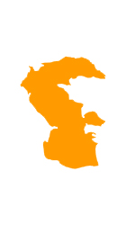
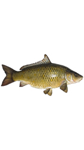
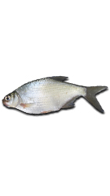
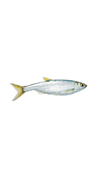

Рыбы на каспийском море
-
Каспий
Растительный мир Каспийского моря и его побережья представлен 728 видами. Из растений в Каспийском море преобладают водоросли — синезелёные, диатомовые, красные, бурые, харовые и другие, из цветковых — зостера и руппия. По происхождению флора относится преимущественно к неогеновому возрасту, однако некоторые растения были занесены в Каспийское море человеком сознательно либо на днищах судов
- 
-
Сазан
Сазан – это научное название речного карпа. Эти рыбы считаются одними из самых популярных и распространенных обитателей пресных водоемов. Практически любой рыбак мечтает получить трофей в виде сазана. Ареал обитания сазана довольно обширный. Им несвойственна миграция, они практически всю свою жизнь проводят в пределах одного водоема
- 
-
Густера
Многим знакома густера, широко распространенная по различным водоемам. Не стоит путать эту рыбу с подлещиком, есть между ними целый ряд отличий, в которых постараемся разобраться. Кроме внешности, изучим так же поведение густеры, ее характер, пищевые привычки, особенности нерестового периода и статус рыбьей популяции
- 
-
Уклейка
Такая небольшая рыбка, как уклейка, знакома многим, ведь она является обитательницей разнообразных водоемов и довольно часто встречается рыболовам-любителям. На первый взгляд, ничего особо приметного в ней обнаружить невозможно, но мы попытаемся изучить важные нюансы ее жизнедеятельности, описав не только внешне, но и обратив внимание на характер и повадки, узнав интересные факты из рыбьей жизни уклейки.
- 